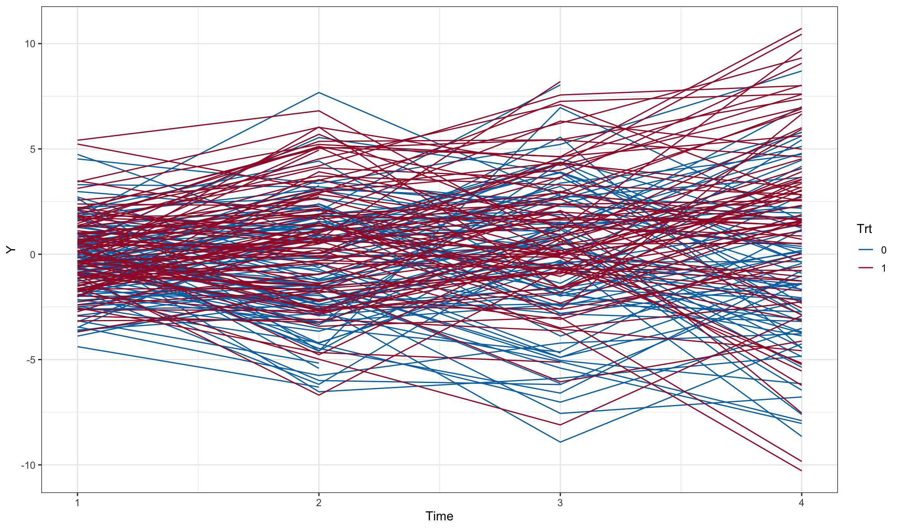
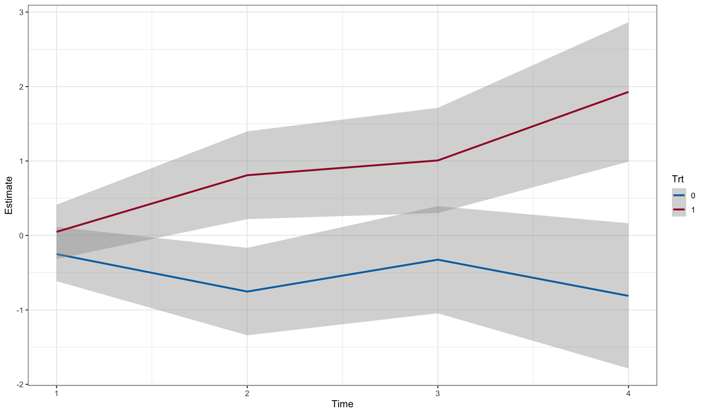

library(longpower)
library(nlme)
library(mvtnorm)
library(parallel)
library(ggplot2)
library(contrast)Power for MMRM
We use the power calculation formula of Lu, Luo and Chen (2008) for Mixed Models of Repeated Measures, which accomodates general missing data patterns. This formula is implemented in the longpower package. We also verify the formula with a simple simulation.
Load packages
Simulation settings
gls_sigma <- 2
gls_weights <- c(1, 1.5, 1.75, 2.0)
placebo_mean <- c(0, 0, 0, 0)
active_mean <- c(0, 1, 1.5, 1.8)
retention <- c(1, 0.9, 0.8, 0.7)
# compound symmetric R
R <- matrix(0.5, nrow = 4, ncol = 4)
diag(R) <- 1
N <- 200Analytic calculations
power.mmrm(power=0.80, ra = retention, Ra=R, N=N, sigmaa = gls_sigma*gls_weights[4])
Power for Mixed Model of Repeated Measures (Lu, Luo, & Chen, 2008)
n1 = 100
n2 = 100
retention1 = 1.0, 0.9, 0.8, 0.7
retention2 = 1.0, 0.9, 0.8, 0.7
delta = 1.798283
sig.level = 0.05
power = 0.8
alternative = two.sidedpower.t.test(power=0.80, n = N/2*retention[4], sd = gls_sigma*gls_weights[4])
Two-sample t test power calculation
n = 70
delta = 1.907529
sd = 4
sig.level = 0.05
power = 0.8
alternative = two.sided
NOTE: n is number in *each* groupThe t-test delta is larger, which is expect given the conservative handling of the assumed retention rate. The MMRM makes use of partial informatin from dropouts.
Set up data for simulation
dd0 <- expand.grid(time = as.factor(1:4), id = 1:N)
dd0$Time <- as.numeric(dd0$time)
dd0$trt <- ifelse(dd0$id <= N/2, 0, 1)
dd0 <- as.data.frame(model.matrix(~ -1+id+trt*time+Time, data = dd0))
dd0[,'trt:time1'] <- with(dd0, trt*time1)
dd0$Trt <- as.factor(dd0$trt)
dd0$time <- as.factor(dd0$Time)
dd0$Y0[dd0$trt==1] <- as.matrix(subset(dd0, trt==1, c('trt:time1', 'trt:time2',
'trt:time3', 'trt:time4'))) %*% active_mean
dd0$Y0[dd0$trt==0] <- as.matrix(subset(dd0, trt==0, c('time1', 'time2',
'time3', 'time4'))) %*% placebo_mean
ggplot(dd0, aes(x=Time, y=Y0, color=Trt)) + geom_line()
set.seed(20130318)
dd1 <- merge(dd0, data.frame(id = 1:N, drop = sample(1:5, N, replace=TRUE, p=c(0,0.1,0.1,0.1,0.7))))
dd1$e <- as.numeric(t(rmvnorm(n=N, mean=rep(0,4), sigma=gls_sigma^2*diag(gls_weights)%*%R%*%diag(gls_weights))))
dd1$Y <- with(dd1, Y0 + e)
dd1 <- subset(dd1, Time < drop)
ggplot(dd1, aes(x=Time, y=Y, color=Trt, group = id)) + geom_line()
fit0 <- gls(Y~-1+(time1+time2+time3+time4)+(time1+time2+time3+time4):trt,
correlation = corCompSymm(form = ~ Time | id),
weights = varIdent(form = ~ 1 | Time),
data=dd1)
summary(fit0)$tTable Value Std.Error t-value p-value
time1 -0.2498166 0.1857705 -1.3447591 0.1791507434
time2 -0.7536542 0.2990315 -2.5203167 0.0119523864
time3 -0.3253077 0.3665450 -0.8874973 0.3751245464
time4 -0.8114158 0.4966029 -1.6339329 0.1027351200
time1:trt 0.2980273 0.2627192 1.1343948 0.2570281147
time2:trt 1.5625956 0.4238492 3.6866786 0.0002452827
time3:trt 1.3327856 0.5136925 2.5945204 0.0096761153
time4:trt 2.7390980 0.6883514 3.9792145 0.0000765598fit1 <- gls(Y~-1+time*Trt,
correlation = corCompSymm(form = ~ Time | id),
weights = varIdent(form = ~ 1 | Time),
data=dd1)
(ctrast <- contrast(fit1,
list(time=levels(dd1$time), Trt=levels(dd1$Trt)[2]),
list(time=levels(dd1$time), Trt=levels(dd1$Trt)[1])))gls model parameter contrast
Contrast S.E. Lower Upper t df Pr(>|t|)
0.2980273 0.2627192 -0.2178097 0.8138642 1.13 681 0.2570
1.5625955 0.4238486 0.7303884 2.3948026 3.69 681 0.0002
1.3327868 0.5136947 0.3241710 2.3414026 2.59 681 0.0097
2.7390986 0.6883513 1.3875528 4.0906444 3.98 681 0.0001newdat <- rbind(
with(contrast(fit1, list(time=levels(dd1$time), Trt=levels(dd1$Trt)[1])),
data.frame(time = time, Trt = Trt, Estimate = Contrast, SE = SE,
Lower = Lower, Upper = Upper, 't-value' = testStat, 'p-value' = Pvalue)
),
with(contrast(fit1, list(time=levels(dd1$time), Trt=levels(dd1$Trt)[2])),
data.frame(time = time, Trt = Trt, Estimate = Contrast, SE = SE,
Lower = Lower, Upper = Upper, 't-value' = testStat, 'p-value' = Pvalue)
)
)
newdat$Time <- as.numeric(newdat$time)
ggplot(newdat, aes(y=Estimate, x=Time, color = Trt)) +
geom_smooth(aes(ymax = Upper, ymin = Lower), stat = 'identity')
Simulate using parallel
set.seed(20130318)
results <- mclapply(1:10000, function(x){
dd1 <- merge(dd0, data.frame(id = 1:N, drop = sample(1:5, N, replace=TRUE, p=c(0,0.1,0.1,0.1,0.7))))
dd1$e <- as.numeric(t(rmvnorm(n=N, mean=rep(0,4), sigma=gls_sigma^2*diag(gls_weights)%*%R%*%diag(gls_weights))))
dd1$Y <- with(dd1, Y0 + e)
dd1 <- subset(dd1, Time < drop)
try(summary(update(fit0, data = dd1))$tTable['time4:trt', 'p-value'], silent = TRUE)
}, mc.cores = 10)Simulated power results
cat(sum(results < 0.05)/length(results)*100)79.99